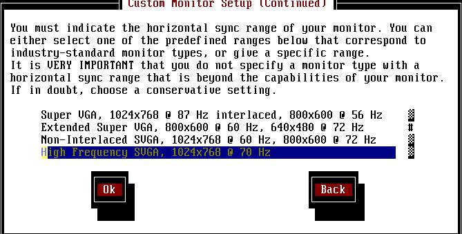

|
|
||||||||||||||
since2012/04/23 |
 |
|
||||||||||||
 |
|
|
|
|
||||||||||
|
|
|
|
|
|||||||||||
|
|
|
|
||||||||||||
|
|
|
|
|
|
|
|
|
|
|
|
|
|
|
|
XFree86 的历史演进与版本
X server, X client 与 Window manager
XFree86 的主要配置文件案
使用设定工具：XFdrake, Xconfigurator
使用XFree86提供的工具设定：xf86cfg, xf86config
手动修改XFree86配置文件
启动X-Window
更新显示适配器驱动程序范例：以Geforce2 MX 说明
X-Window的架构
在Unix-Like包括Linux等作业底下的图形界面通常被我们简称为X-Window啰，这个X-Window怎么来的？他目前的版本是怎样？还有，X-Window主要是主从架构的(Server, Client)，那么这些主从架构是怎么回事呢？我们底下就来谈一谈这些东西吧！
- XFree86 的历史演进与版本
基本上，X-Window的核心就是 XFree86 这个玩意儿啰，他怎么来的呢？在早期的Unix世界中，并没有所谓的图形界面，所以在一些图形展示上面有点困扰就是了，后来经过麻省理工学院(MIT)的发展，终于在 1986 年开发出在 Unix 系统上面的 X Window System！并且组织了 XFree86 这个计划组织来发展这个图形接口！从此之后，人们才可以在 Unix 操作系统中看到这个美美的图形化接口(Graphical User Interface, 简称GUI)呢！那么这个 XFree86 组织继续发展这个接口，到了 1987 年释出第一版的X11版本，而后陆续发展出更新的版本，在第二版释出被称为X11R2，目前的版本则是第六次释出，称为X11R6啰！而目前的X11R6版本中，主要依照新旧又被分为较旧的第三版(version 3)，以及较新的第四版(version 4)。(注： XFree86 的命名基本上为 X 系统 + Free 软件 + x86 系统架构 的简写啰！)
那么在 Linux 针对 XFree86 的使用上面情况是怎样呢，呵呵，在 1994 年第一个 Linux kernel 1.0 的版本当中，就已经支持 XFree86 啰！至于目前在 2002 年之后出版的 Linux distribution 通常都已经换为了version 4了，例如 Mandrake 9.0 及Red Hat 7.2以后版本，这一版支持的显示适配器驱动程序较多，而且也较新啦！不过，在 2001 年以前的Linux版本则主要还是以 version 3 为主呢！
- X server, X client 与 Window manager
大概了解一下X-Window的历史与版本之后，接着下来我们要来谈一谈，那么什么是X server, X client这些个东西，怎么一个X-Window有这么多的奇怪的接口，什么KDE啦还有GNOME啦等等的！
- X server：
基本上，XFree86的主要功能是什么呢？嗯！那就是管理整个Linux主机上面的关于显示的硬件配备啦！例如显示适配器、屏幕分辨率、键盘形式、 鼠标形式等等，咦！那我们在安装Linux的时候，不是都已经可以将这些信息设定好了吗？这里必须说明的是，X-Window在Linux里面只是『一个 软件』而已，所以，你在安装Linux的时候，选择的键盘也好，鼠标形式也好，都是给Linux这个系统用的，跟X-Window可没有绝对的关系呢！所 以这也就说明啦，你的X-Window要在Linux上面启动时，还需要加载X-Window需要的驱动程序才行！所以呢，当你以run-level 3进入Linux之后，基本上，X-Window是完全不存在你的系统的内存中，而当你输入startx以启动X-Window系统时，这个时候 Linux才会开始读入X-Window的驱动程序(大概就是显示适配器驱动程序、屏幕分辨率调整等等的设定值)。所以，请注意啦，这个X server就是用来管理Linux主要关于显示的一些硬件与驱动程序啰！
- X client：
大略知道了X server之后，再来我们要看一看，那么什么是X client呢？又没有网络联机，怎么会有client这个名词？其实，X server主要的功能只是在管理显示的驱动程序与硬件，但是在整个屏幕前面显示给用户，并且经由用户移动鼠标也好、键盘也好，来启动一些『事件』的动作，以响应给X server，并进一步处理一些信息，则是需要一些X的软件来进行，这些关于X的软件，我们就可以称为是X client啰！反正，只要是关于一些窗口的行为、显示在屏幕的行为等等，使用者都是透过X client来告诉X server的啦！那也就是说，『当X server死掉的时候，X client根本就无法动作！』怎么说呢？因为管理硬件的X server都不动了，利用这个server来进行显示与事件触发的X client要怎么活下去？了解了吗？
- Window manager：
那么什么又是『窗口管理员？』说穿了，其实窗口管理员你也可以简单的将他看做是一个X client啦！这个Window manager主要是做为你跟整个X Window系统的接口，所以，所有的X软件(就是上面讲到的X client)都是他管的！目前最热门的两个窗口管理员就是KDE与GNOME啰！
如果我们以KDE来作说明，那么您应该不难了解，主要的硬件驱动还是得要X Window的核心，也就是XFree86这个咚咚没有问题的驱动之后，然后我们才能进入KDE这个窗口管理员的接口之下进行美美的图形接口环境工作！万一哪一天您的X-Window死掉了，你必须要知道的是，你是怎么让他死掉的？
- 如果之前还可以进入X-Window，也就是KDE，不过经过当机之后(这里指的是并没有重新设定 XFree86喔！)，导致X-Window无法进入，那么应该可能就来自于KDE的问题了，这个情况之下，通常删除自己家目录之下的.kde这个隐藏目 录后，就可以恢复到最原始的状态。
- 但是如果一安装完Linux就一直无法进入X-Window的话，那么大概就是XFree86这个核心没有设定好的问题啦！所以我们就必须要设定XFree86呢！
- XFree86 的主要配置文件案
好啦，既然如果曾经进入过X-Window，则可能的问题就会变成是window manager的问题，而不是XFree86的问题，那么情况应该还容易解决，所以我们不谈这个。我们底下要谈的是当你的X-Window一直无法正确且 成功的启动时，那么应该就是硬件配置的问题啦！例如分辨率调错啦、鼠标格式不对啦、显示适配器的驱动程序不对等等的问题！果真是这些问题的时候，我要如何来重 新设定我的XFree86这个核心呢？
刚刚前面提过，我们的XFree86目前有两个版本，分别是version 3与version 4，那么怎么知道我的Linux使用的是哪一个XFree86的版本呢？嗯！就使用：
X –version
来检查吧！好了，那么不同版本的配置文件在哪里？这两个版本的配置文件分别是：
- version 3: /etc/X11/XF86Config
- version 4: /etc/X11/XF86Config-4
请特别留意他的大小写呢！上面的可是配置文件喔！所以呢，当我们说『我的X-Window一直无法驱动，我要去修改我的配置文件！』通常指的就是这个 档案啦！目前我们在Linux里面大多是使用version 4了，因此底下我们将以/etc/X11/XF86Config-4这个档案来说明呢！请注意，如果您的X-Window本来可以正确无误的启动时，表示 这个档案内容是对的，这个时候，『请务必将您的这个设定文件备份一个！』因为未来如果设定错误导致无法进入X-Window时，只要将原本正确的备份文件 覆盖回来，你的X-Window就救回来了！所以这个档案真的很重要，请记得一定要备份喔！
cp /etc/X11/XF86Config-4 /etc/X11/XF86Config-4.bak
底下我们就来谈一谈，怎么样设定我们的XFree86呢？一般而言，如果你要重新设定XFree86的一些细项设定时，最好的步骤是：
- 如果已经能够进入X-Window了，那么就直接以Window manager提供的小工具来设定你的XFree86，例如KDE提供的control center就可以进行这个工作；
- 如果没有办法进入X-Window了，那么就使用各家distribution提供的小工具来设定我们的XFree86配置文件；
- 如果各家提供的工具还没有办法设定好XFree86的话，那么就必须要使用到XFree86提供的小软件工具，在指令列模式下面执行的xf86cfg或xf86config啰！
- 如果调整的结果您还是不太满意，那么就直接手动的来微调/etc/X11/XF86Config-4这个档案吧！
使用设定工具：XFdrake, Xconfigurator：
好了，如果你的X-Window本来就没有问题，那么底下的数据就可以不要看啦！但是，如果你的X-Window一直怪怪的，那 么底下的设定方式就得给他瞧一瞧！目前使用上面较为方便的，还是以各家distribution提供的小工具来设定我们的/etc/X11 /XF86Config-4这个档案较为方便，而设定的内容不外乎：上面那个显示的分辨率还得要了解一下，我们在设定屏幕的分辨率时，指的是『我的屏幕能够负荷的最高分辨率』，而在第五项的显示的分辨率，是我们进入X-Window并且使用Window manager来操作主机之后，那个桌面的支持的分辨率啦！因此，第三项屏幕的分辨率当然就可以设定的比较高啰！
- 键盘的格式；
- 鼠标的格式；
- 屏幕的格式，包含分辨率、水平、垂直更新频率等等；
- 显示适配器的主要驱动程序，也就是所谓的X server最主要的内容啦！
- 显示的分辨率：
目前最流行的两套Linux：Mandrake与Red Hat均提供不错的软件来设定XF86Config-4，那就是：这两个套件设定的项目几乎都是一模一样啦。好了，请记得备份你的XF86Config-4这个档案吧。
- Mandrake XFdake
- Red Hat Xconfigurator
很简单吧，这就是使用工具软件来设定的方法。底下我们来提一提，那么正统的设定XFree86该怎么玩？
- Mandrake ： XFdrake
直接在指令列模式中输入XFdrake开始使用 XFdrake 的 X 设定啰！
- 侦测系统的硬件配置：
进入XFdrake之后的第一个动作即是在侦测你的主机上面的硬件啦！如果捉到硬件之后，会将你的Linux主机上面的硬件给他显示在画面上，如同上图所示，而且有几个设定值：
- Graphic Card: 这个显示目前你的显示适配器芯片；
- Monitor: 显示目前你的屏幕厂牌或者选择自定义(Custom)
- Resolution: 选择你的X-Window显示的分辨率
- Test: 立即测试你的硬件配置
- Options: 让你选择是否开机的时候进入X-Window
- Quit: 离开XFdrake这个程序！
请注意，在选择的时候，必须要使用<tab>按键，使光标移动到OK之后，才可以进入各细项去选择呢！
- 显示适配器芯片组的选择：Graphic Card
在按下了Graphic Card之后，会出现可以选择芯片组的画面来，如下图所示，在下图中，基本上会有三个字段，第一个Vendor是说厂商，第二个SIS则是发展的厂商名 称，例如你的显示适配器是Nvidia的，那么就选择Nvidia吧！第三个则是这个厂商的支持芯片组！嗯！选择你的显示适配器吧！我这里是使用SIS的6326 啦！
好了，确定了芯片组之后，由于我们的X11目前有两版，所以必须要先确认一下你的X11版本为何？因为这两个版本使用的芯片组驱动程序并不相同呀！因此，按下OK之后会出现下面图示：
由于我是使用version 4，所以这里就选择XFree 4.2.1啰！选择了XFree 4.2.1之后，系统会回复到最先前的画面喔！
- 设定屏幕：Monitor
设定完了显示适配器之后，再来则是设定另外一个很重要的咚咚，就是显示器，也就是屏幕设定啦！在屏幕的设定当中，首先，你可以选择程序提供的显示器的厂牌，如下图所示，如果你可以找到你的屏幕厂牌的话，那么直接点选就可以啦！如果找不到的话，那么就直接选择Custom吧！
如果刚刚上面选择了厂牌的话，那么程序将会自动设定水平、垂直更新频率；但是，如果是选择了Custom的话，那么就会出现如上的图示来要求你输 入水平、垂直的更新频率。这里请特别留意呢，因为这两个频率设定错误的话(如果设定得太高了的话)很有可能会造成『屏幕的烧毁』，通常设定水平31-57 及垂直50-90应该都不会有问题啦！这里设定完之后，又会回到最先前的画面。
- 设定X-Window分辨率：Resolution
在按下了Resolution之后，会出现下图：
在屏幕的分辨率上面，这个就随个人的喜好而定了，鸟哥特别喜欢字小小的，桌面大大的，所以比较偏好1024x768这样的设定值啰！
- 实地测试：Test
再来，如果按下Test之后，XFdrake就会帮我们进行测试工作了！奇怪的是，我做了好几次，结果都没有办法Test成功！真是奇怪？如果在这个画面中当掉了，不要慌张，按下[Ctrl]+[Alt]+[F1]就会回到原来的画面，基本上，不Test也没有关系啦！
- 设定run-level：Options
接着下来则是设定是否开机即启动X-Window，也就是所谓的run-level 5啦
以我为例，因为我的Linux都是拿来当服务器用的，而且对于X-Window不是很有使用的时机，所以我都是以run-level 3来登入Linux的，自然也就选择No啰！
- 离开XFdrake：Quit
这样就设定完毕了！所以选择离开，这个时候会出现如下的图示：
如果确定一切都没有问题，就给他按下『Yes』吧！这样就完成设定了！当然啦，你的/etc/X11/XF86Config-4就被更改啰！
- Red Hat : Xconfiguration
在 Red Hat 里面也有个 Xconfiguration 来简单的设定我们的 X Window 的各项设定喔！
- 执行 Xconfigurator ：
这个时候会出现一个欢迎画面，按下 OK 之后，系统会自动去捉显示适配器的芯片组。 如果显示适配器是这一版的 XFree86 有支持的话，那系统就会显示出你的显示适配器型号，如下图所示为 S3 的 Trio64v2 芯片：
- 设定屏幕与屏幕分辨率：
上图按下 OK 之后会开始去设定显示器（屏幕），一般我们都用自定义的方法去捉屏幕，所以选择 Custom 手动设定（第一项），如下图所示：
按下 OK 之后，系统会告诉你一些讯息，再按下 OK 后，就会出现如下的画面，告诉你应该要选择哪一个屏幕的分辨率，通常我们都会选择『High Frequency SVGA, 1024x768 @ 70Hz 』那一个选项。

上图按下 OK 之后，就会要求你选择垂直分辨率，通常我们都是选择第二项，也就是 50-90 那一项即可；
- 显示适配器相关设定：
再来系统会问你是否要让 XFree86 自己捉显示适配器相关的信息？这里可以按 Probe 也可以按 Don't Probe ，只是，如果你确切的知道你的显示适配器内存的大小的话，这里建议选择 Don't Probe； 上一步骤选择 Don't Probe 之后，系统会要你选择你的内存，请依你的显示适配器内存实际大小输入，如果是 S3 Vrige 的话，通常是 1M 或者是 2M 左右吧！
选完了内存大小之后，过来是选择你的记忆频率芯片，由于我们通常不是很清楚我们的芯片是哪一个，所以这里只好让系统自己捉，如下图，直接选择 No Clockchip Setting 即可！

- 色彩度的设定：
再来则是选择画面分辨率与色彩量，如下图所示，一般而言，如果你的 X-Window 一直有问题，这里可以选择 8 bit，及 640x480 的最原始设定就好！如果你的 X-Window 没有问题，可以正常的使用了，而你觉得你想要让你的色彩最大化，则可以仅选择 24 bit 及 1024x768 这一项即可！如此一来，你就可以以你最喜欢的分辨率与色度进入 X-Window 啦！（注意喔，在 bit 之间以 tab 键移动，而以 空格键 确定！）
接着下来系统告诉你要开始测试 X-Windows 啦，按下 OK 之后系统就开始测试 X-Window！在这个地方要注意一下，如果你的设定不完全，则系统将会回到第三步骤重新再设定，如果你在这一个步骤重复了三次以上仍无法设定成功，那就必须以 xf86config 这支程序设定了！
如果你可以正常的看到一个光标及一个框框告诉你还有10秒钟的时间可以按确定，那就表示你的 X-Window 可以用啦！这个时候请选择 OK，然后出现的另一个框框告诉你：『是否要在下次开机的时候以图形接口登入』，这一步千万选择『NO』，因为以 X-Window 为默认的开机接口，个人觉得并不好，因为不但占用了较多的系统资源，而且，并不会比较好使用！
完成设定了，跳出 Xconfigurator 后，以 startx 进入 X-Window ！


使用XFree86提供的工具设定：xf86cfg, xf86config
基本上，XFree86 已经提供了两支相当好用的程序来帮我们设定 XF86Config-4 了！那就是 xf86cfg 及 xf86config 这两个！
那个 xf86cfg 会自动的侦测我们的主机信息，并且直接将新的 XF86Config.new 档案放置在设定者的家目录之下，相当的方便！只要用户在启动 X-Window 之前，将自己家目录的 XF86Config.new 复制到 /etc/X11/XF86Config-4 这个档案，那么就完成设定啦！但是，由于 xf86cfg 主要是自动帮我们捉取数据的，除非您使用 man xf86cfg 来查询他的参数，否则常常无法捉到自己喜欢的模式！使用的方法是直接在指令列模式下，下达 xf86cfg 即可！
相对于 xf86cfg 的主动侦测数据，这个 xf86config 则显的较为老态龙钟，因为他的所有设定都需要使用者给予呢！包括键盘、鼠标、屏幕、分辨率等等的问题。不过，因为他都是经由使用者设定的，所以自然也就有 办法直接提供使用者一个喜好的环境设定啰！底下我们就针对 xf86config 来谈一谈吧！
[root @test root]# xf86config
Step 1: 准备备份与是否进行？
This program will create a basic XF86Config file, based on menu selections you make.
Before continuing with this program, make sure you know what video card
you have, and preferably also the chipset it uses and the amount of video
memory on your video card. SuperProbe may be able to help with this.
Press enter to continue, or ctrl-c to abort. <==这里按下Enter开始设定Step 2: 设定鼠标：
First specify a mouse protocol type. Choose one from the following list:
1. Microsoft compatible (2-button protocol)
2. Mouse Systems (3-button protocol)
3. Bus Mouse
4. PS/2 Mouse
5. Logitech Mouse (serial, old type, Logitech protocol)
6. Logitech MouseMan (Microsoft compatible)
7. MM Series
8. MM HitTablet
9. Microsoft IntelliMouse
Enter a protocol number: 4 <==主要是2或4，目前大多使用ps/2鼠标，所以选4就对了！Do you want to enable Emulate3Buttons? n <==是否模拟三键？我们已经是三键，当然不模拟！
Now give the full device name that the mouse is connected to, for example
/dev/tty00. Just pressing enter will use the default, /dev/mouse.
Mouse device: <==这里要设定鼠标的装置代号，通常使用默认值即可，所以按下Enter！Step 3: 设定键盘格式：
1 Generic 101-key PC
2 Generic 102-key (Intl) PC
3 Generic 104-key PC
4 Generic 105-key (Intl) PC
5 Dell 101-key PC
6 Everex STEPnote
7 Keytronic FlexPro
8 Microsoft Natural
Enter a number to choose the keyboard.
1 <==选择键盘的形式，如果不知道你的键盘格式，选择 1 或 3 即可！1 U.S. English
2 U.S. English w/ ISO9995-3
3 U.S. English w/ deadkeys
4 Albanian
Enter a number to choose the country.
Press enter for the next page
1 <==选择键盘按键，我们键盘上面有的是英文呀！所以当然选择 1 英文按键！Please enter a variant name for 'us' layout. Or just press enter
for default variant
<==选择这个键盘的名称，默认称为 us ，不用搞特殊，Enter即可！Please answer the following question with either 'y' or 'n'.
Do you want to select additional XKB options (group switcher,
group indicator, etc.)? n <==是否需要额外的XKB选项，不需要啦！按 n ！Step 4:设定屏幕
Now we want to set the specifications of the monitor.
The valid range for horizontal sync and vertical sync should be documented
in the manual of your monitor. If in doubt, check the monitor database
/usr/X11R6/lib/X11/doc/Monitors to see if your monitor is there.
Press enter to continue, or ctrl-c to abort. <==准备设定屏幕，按Enter开始hsync in kHz; monitor type with characteristic modes
1 31.5; Standard VGA, 640x480 @ 60 Hz
2 31.5 - 35.1; Super VGA, 800x600 @ 56 Hz
3 31.5, 35.5; 8514 Compatible, 1024x768 @ 87 Hz interlaced (no 800x600)
4 31.5, 35.15, 35.5; Super VGA, 1024x768 @ 87 Hz interlaced, 800x600 @ 56 Hz
5 31.5 - 37.9; Extended Super VGA, 800x600 @ 60 Hz, 640x480 @ 72 Hz
6 31.5 - 48.5; Non-Interlaced SVGA, 1024x768 @ 60 Hz, 800x600 @ 72 Hz
7 31.5 - 57.0; High Frequency SVGA, 1024x768 @ 70 Hz
8 31.5 - 64.3; Monitor that can do 1280x1024 @ 60 Hz
9 31.5 - 79.0; Monitor that can do 1280x1024 @ 74 Hz
10 31.5 - 82.0; Monitor that can do 1280x1024 @ 76 Hz
11 Enter your own horizontal sync range
Enter your choice (1-11): 7 <==目前的屏幕选择 7 应该都吃的下啦！
当然，如果你的屏幕比较好，可以考虑选择 8~10 的选择！the number that counts is the high one (e.g. 87 Hz rather than 43 Hz).
1 50-70
2 50-90
3 50-100
4 40-150
5 Enter your own vertical sync range
Enter your choice: 2 <==目前屏幕选择 2 也应该都没有问题啦！You must now enter a few identification/description strings, namely an
identifier, a vendor name, and a model name. Just pressing enter will fill
in default names.
The strings are free-form, spaces are allowed.
Enter an identifier for your monitor definition: MyMonitor<==这里要写一下你的屏幕的代号，
随便写没有关系啦！因为这个是在XF86Config里面的代号而已！Step 5: 设定显示适配器
Do you want to look at the card database? y <==是否要选择显示适配器？当然是要啰！468 SiS 5597 SiS5597
469 SiS 5598 SIS5598
470 SiS 620 SIS620
471 SiS 6326 SiS6326
472 SiS SG86C201 SIS86C201
Enter a number to choose the corresponding card definition.
Press enter for the next page, q to continue configuration.
471<==这里接着下来会让你选择你的显示适配器数据，由于我们的数据库相当庞大，所以
如果该页没有你要的数据时，可以按下Enter到下一页去选择！那么如果你的厂商
是比较小牌的怎么办？没关系，果真如此，那么选择不同厂商但是同样芯片的
数据就可以了！由于我是使用Sis 6326，所以就选择471这个号码啰！Your selected card definition:
Identifier: SiS 6326
Chipset: SiS6326
Driver: sis
Do NOT probe clocks or use any Clocks line.
Press enter to continue, or ctrl-c to abort. <==这里再按Enter即可！How much video memory do you have on your video card:
1 256K
2 512K
3 1024K
4 2048K
5 4096K
6 Other
Enter your choice: 6 <==设定你的显示适配器内存，目前的主流已经提升到 64MB了，
所以自然要选择 6 来自定了！记得 RAM 的算法：
32M = 32*1024= 32768K 才对喔！Amount of video memory in Kbytes: 1024 <==我的卡只有 1M 而已….
The strings are free-form, spaces are allowed.
Enter an identifier for your video card definition: <==这里按下 Enter 使用默认值即可！Step 6:设定屏幕分辨率：
"640x480" "800x600" "1024x768" for 8-bit
"640x480" "800x600" for 16-bit
"640x480" for 24-bitModes that cannot be supported due to monitor or clock constraints will
be automatically skipped by the server.1 Change the modes for 8-bit (256 colors)
2 Change the modes for 16-bit (32K/64K colors)
3 Change the modes for 24-bit (24-bit color)
4 The modes are OK, continue.Enter your choice: 3 <==预设的情况下会有上面的那些模式，那么我通常喜欢一种模式而已，
所以就按下 3 来修改该模式，设定为我喜欢的 1024x768 那个模式。Select modes from the following list:
1 "640x400"
2 "640x480"
3 "800x600"
4 "1024x768"
5 "1280x1024"
6 "320x200"
7 "320x240"
8 "400x300"
9 "1152x864"
a "1600x1200"
b "1800x1400"
c "512x384"
Please type the digits corresponding to the modes that you want to select.
For example, 432 selects "1024x768" "800x600" "640x480", with a
default mode of 1024x768.Which modes? 4 <==选择我要的呦！
Please answer the following question with either 'y' or 'n'.
Do you want a virtual screen that is larger than the physical screen? n
上面的设定在说明，是否需要虚拟桌面？我才不要呢！所以选择 n 啰！1 Change the modes for 8-bit (256 colors)
2 Change the modes for 16-bit (32K/64K colors)
3 Change the modes for 24-bit (24-bit color)
4 The modes are OK, continue.Enter your choice: 4 <==这样就 OK 了！
Please specify which color depth you want to use by default:
1 1 bit (monochrome)
2 4 bits (16 colors)
3 8 bits (256 colors)
4 16 bits (65536 colors)
5 24 bits (16 million colors)
Enter a number to choose the default depth.
5 <==预设是哪一个色彩度登入呢？选择你要的喔！我要的是 5 那个色彩度！Step 7: 写入配置文件
Shall I write it to /etc/X11/XF86Config? y <==勇敢一点！给他 y 写入吧！反正已经备份了！
这样就设定完成了，但是比较麻烦的是，这个指令在设定XF86Config，所以你必需将他复制成为XF86Config-4才可以呢！然后就可以测试一下X-Window是否成功啰！
手动修改XFree86配置文件
好了，既然知道前面几个咚咚都是在设定XF86Config-4这个档案，那么我们岂不是也可以自行去修改这个档案呢？说的好！没错！所以我们就来修修改改这个档案吧！首先，这个档案里面将很多的段落分成这种模样：
Section “section name”
……..
……..
EndSection
开头由 Section 接着该段落的内容项目，然后结束以 EndSection 来结束，我们直接在档案内容进行说明吧！请参考一下底下的内容啰：
[root @test X11]# vi /etc/X11/XF86Config-4
Section "Module"
Load "dbe"
Load "dri"
Load "extmod"
Load "glx"
Load "record"
Load "xie"
Load "freetype"
Load "type1"
Load "v4l"
EndSection
上面的数据在加载驱动X-Window的时候，需要的模块项目！通常这些项目都给他加载进去吧！另外，模块的数据可以在/usr/X11R6/lib/modules这个目录中找到！Section "Device"
Identifier "Card0"
Driver "nv"
VendorName "NVidia"
BoardName "GeForce2 MX"
BusID "PCI:1:0:0"
Option "X-KXCONFIG-VideoRam" "32768"
Option "X-KXCONFIG-MaxClock" "350"
EndSection
这个项目在设定你的显示适配器驱动程序！以我的卡为例，这个例子中，使用的是 Geforce 2 MX，
所以当然就是使用 nv 这个预设的 Nvidia 驱动程序啦！还有Option里面的VideoRam设定的是显示适配器内存容量，记得填对！至于其他的项目就没有这么重要！Section "Files"
RgbPath "/usr/X11R6/lib/X11/rgb"
FontPath "/usr/X11R6/lib/X11/fonts/75dpi:unscaled"
FontPath "/usr/X11R6/lib/X11/fonts/misc:unscaled"
FontPath "/usr/X11R6/lib/X11/fonts/TrueType"
FontPath "/usr/X11R6/lib/X11/fonts/Type1"
FontPath "/usr/X11R6/lib/X11/fonts/Speedo"
FontPath "/usr/X11R6/lib/X11/fonts/ghostscript"
EndSection
这个项目在设定字型与颜色，那个RgbPath是设定色彩，而FontPath则是设定字型的地方！
这里告诉我们另一个信息，那就是字型通常是摆在/usr/X11R6/lib/X11/fonts里面喔！Section "ServerFlags"
Option "AllowMouseOpenFail" “false”
EndSection
这里可以设定X-Window的另一个整体化参数！上面那个 AllowMouseOpenFail 的设定中，
若设定为 “false” 那么没有找到并驱动鼠标，就不能登入X-Window啰！Section "InputDevice"
Driver "keyboard"
Identifier "keyboard"
Option "XkbRules" "xfree86"
Option "XkbModel" "pc104"
Option "XkbLayout" "us_group3"
EndSection
Section "InputDevice"
Driver "mouse"
Identifier "mouse"
Option "Protocol" "IMPS/2"
Option "Device" "/dev/psaux"
Option "ZAxisMapping" "4 5"
EndSection
这个是在设定周边输入接口，有键盘及鼠标两种设定，注意上面黑体的地方，keyboard设定的是键盘的格式(XkbModel与 XkbLayout)，而鼠标则是设定接口(Protocol)较为重要！Section "ServerLayout"
Identifier "Default layout"
Screen 0 "Screen0" 0 0
InputDevice "mouse" "CorePointer"
InputDevice "usbmice" "SendCoreEvents"
InputDevice "keyboard" "CoreKeyboard"
EndSection
这个地方在设定整个画面的输出呢！重点在 Screen 那个项目的设定喔！那个 0 0 指的是桌面左上角为 0 0 的意思！Section "Monitor"
Identifier "Generic Monitor"
VendorName "Typical Monitors"
ModelName "1280x1024, 60Hz"
HorizSync 31-64
VertRefresh 50-90
ModeLine "1024x768/70Hz" 75 1024 1048 1184 1328 768 771 777 806 -HSync -VSync
ModeLine "640x480" 25.175 640 664 760 800 480 491 493 525
EndSection
这个项目则是设定屏幕的细项，包括分辨率、更新频率等等的设定值喔！Section "Screen"
Identifier "Screen0"
Device "Card0"
Monitor "Generic Monitor"
DefaultDepth 16
Subsection "Display"
Depth 32
Modes "1024x768/70Hz" "640x480"
Virtual 0 0
EndSubsection
Subsection "Display"
Depth 24
Modes "1024x768/70Hz" "640x480"
Virtual 0 0
EndSubsection
Subsection "Display"
Depth 8
Modes "1024x768/70Hz" "640x480"
Virtual 0 0
EndSubsection
Subsection "Display"
Depth 16
Modes "1024x768/70Hz"
Virtual 0 0
EndSubsection
EndSection
重点来了！这个就是设定你进 入X-Window的时候，显示的分辨率啰！默认有支持的项目都会写进来，但是，像比较龟毛的我，就是不喜欢有这么多的项目存在，所以我可以将上面的资 料，只剩下粗体字，其他的都删除，那么进入X-Window就只有一种显示模式！比较方便啦！当然啰，你也可以藉由修改DefaultDepth那个项目 来控制登入X-Window时的设定值啰！
这样就设定完成啦！而如果你曾经选错了『虚拟桌面，Virtual desktop』时，那么就修改Section Screen 那个项目，将里面的 Virtual 改成 0 0 即可啰！一般而言，我们在设定X-Window时，通常会先以各家Linux distribution提供的软件来设定，如果不能成功，就改以xf86cfg来自动设定，还不能成功，就以xf86config来设定，再不成功，唉～只好使用手动的方式修改配置文件啰！
启动X-Window
好了，设定好了XF86Config-4之后，自然就是要启动X-Window试试看啰！那么该如何启动X-Window呢？如果在开机流程简介那一篇有仔细的瞧过的话，应该会知道，我们的开机进入模式有多种，但是基本上正常登入则有run-level 3的文字接口登入及run-level 5的图形接口登入！如果是run-level 5的话，那么表示您目前应该已经是在X-Window的环境下了，如果是在run-level 3要转到X-Window的画面下，那么就直接给他：startx就可以啦！这个时候就会主动的来将我们刚刚设定的内容给他驱动看看，如果可以的话，自然就会进入窗口桌面啰！如果不能进入，再次的给他设定吧！ ^_^
更新显示适配器驱动程序范例：以Geforce2 MX 说明
那么万一我的显示适配器并不被我的XFree86所支援呢？例如最新的Geforce4这些芯片组的显示适配器？没有关系，能不能驱动硬 体是跟硬件发展的厂商有关系的，所以只要硬件开发商能够提供驱动程序的话，那么自然就可以没有问题的给他驱动啰！底下我们以目前最常见的Nvidia的显 示卡来进行说明，让大家了解一下如何更新这个驱动程序吧！
- 下载最新的驱动程序：
既然要更新驱动程序，自然要到硬件开发商的网站去下载啰！底下列出Nvida的网址，您可以前往下载最新的驱动程序啰！我是使用SRPM下载到我的系统当中，然后藉由编译来完成安装的！所以建议您也下载SRPM来玩玩吧！
注：至少要两个档案，档名为：
NVIDIA_GLX-xxxx.src.rpm
NVIDIA_kernel-xxxx.src.rpm
那个xxxx显示的是版本，这两个档案的版本必需一致才行！
- 编译并安装驱动程序：
好了，开始来编译一下我们的SRPM啰！并且安装他们啦！
[root @test root]# rpm --rebuild NVIDIA_kernel-1.0-3123.src.rpm
[root @test root]# rpm --rebuild NVIDIA_GLX-1.0-3123.src.rpm
这个时候会在/usr/src/RPM/RPMS/i586多两个档案，好了，将他装上[root @test root]# rpm -ivh /usr/src/RPM/RPMS/i586/NVIDIA_kernel-1.0-3123.i586.rpm
[root @test root]# rpm -ivh /usr/src/RPM/RPMS/i586/NVIDIA_GLX-1.0-3123.i586.rpm
安装的过程当中会有一些错误讯息显示，不过不要仅，那个是正常的！在安装好了之后，会在/usr/X11R6/lib/modules/drivers多一个名为nvidia_drv.o的档案，那个就是我们要的驱动程序啦！
- 手动加入驱动程序于配置文件中
如果您原先就可以使用X-Window，那么就直接手动的修改/etc/X11/XF86Config-4这个档案，如果原先就无法使用X-Window的话，那么请重新以xf86config设定一下你的XFree86，然后在修改底下的数据：
[root @test root]# vi /etc/X11/XF86Config-4
1. 载入 GLX 模块：
寻找 Section “Module” 确定底下这一行存在，若不存在，请自行加入：
Load "glx"
同时寻找底下两行：
Load "dri"
Load "GLcore"
这两行若存在的话，请删除，若不存在，就没有关系！2. 加载驱动核心程序
寻找Section "Device" 应该会有这一行：
Driver "nv" (或者其他的名称！)
将他修改为如下的样子：
Driver “nvidia”
这样就修订完成了！赶快重新启动X-Window试试看！
2003/02/12：第一次完成
本网页主要以Firefox配合解析度 1024x768 作为设计依据 鸟哥自由软件整合应用研究室